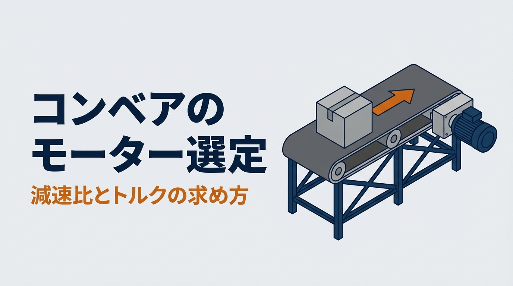

コンベアのモーターを選ぶとき、「前の設備と同じ0.4kW」「とりあえず大きめ」で決めていないでしょうか。本記事では、コンベアのモーター選定の計算方法を、計算例つきで解説します。ほしい速さから減速比を決め、ベルトを引く力からトルクを求めて、モーターの容量を選びます。
ポイントは、減速比を変えると、速さとトルクが入れ替わることです。後半には、条件を入れて容量と減速比を試せる計算ツールと、モーターと減速機を選んで荷物を時間内に運ぶゲームがあります。数値はすべて説明用の例で、一般論にとどまる値には「要確認」と記しています。
計算例の適用範囲
- 本記事は、ベルトコンベアを一定の速さで動かすモーターの、基本的な選定の計算を説明するものです。選定の可否を保証するものではありません
- 摩擦係数、効率、モーターの回転数は、メーカーの技術資料にある値の例です。実際の選定では、使うモーターと減速機のカタログと、メーカーの選定ツールで確かめてください
- 減速機の許容トルク、軸にかかる力、起動と停止の回数、温度などの使用環境は、必要に応じて別に確かめてください
この記事でわかること
- コンベアのモーター選定の流れ
- ほしい速さから、減速比を決める方法（50Hzと60Hzの違い）
- ベルトを引く力から、必要なトルクとモーター容量を求める方法
- 容量と減速比を試せる計算ツール
- モーターと減速機を選んで、荷物を時間内に運ぶゲーム
コンベアのモーター選定の流れ
コンベアのモーターは、次の4つの順で選びます。「必要な動力（kW）だけ求めて選ぶ」方法もありますが、それでは減速比が決まらず、速さもトルクも確かめられません。
ここでは、モーターに減速機を付けた「ギヤモーター」で、ベルトの端のローラー（駆動ローラー）を回す形を考えます。モーターは、工場でよく使われる三相の4極を想定します。
この章のまとめ
- 選定は、減速比 → トルク → 容量 → 起動と速さの確認の順で進める
- 動力（kW）だけで選ぶと、減速比と速さが決まらない
減速比の決め方｜速さとトルクは入れ替わる
三相4極のモーターの同期速度は、50Hzで毎分1,500回転、60Hzで毎分1,800回転です。実際の回転は「すべり」の分だけ遅く、本記事では計算例として、50Hzで1,450r/min、60Hzで1,750r/minを使います。定格の回転速度は機種で違うので、最終的には銘板やカタログの値を使います（要確認）。コンベアのローラーは、毎分数十回転でよいことが多いので、減速機で回転を落とします。
ローラーの回転数 NG ＝ V ÷（π × D）
減速比 i ＝ モーターの回転数 ÷ NG
V：ベルトの速さ（m/min）、D：駆動ローラーの直径（m）
減速機は、回転を 1/i に落とすかわりに、トルクをおよそ i 倍にします（実際は減速機の効率の分だけ小さい）。つまり、減速比を大きくすると、遅くなるが力は強くなる、小さくすると、速くなるが力は弱くなる、という関係です。
計算例：20m/minのベルトコンベア（50Hz）
駆動ローラーの直径100mm、ほしい速さ20m/min（±10％まで許す）とします。
NG ＝ 20 ÷（π × 0.1）＝ 63.7 r/min
i ＝ 1,450 ÷ 63.7 ＝ 22.8
1/20 なら 1,450 ÷ 20 × π × 0.1 ＝ 22.8 m/min（＋14％）
1/25 なら 1,450 ÷ 25 × π × 0.1 ＝ 18.2 m/min（−9％）→ 1/25 を選ぶ
減速比は、メーカーごとに決まった数値の中から選びます。計算値に近い方ではなく、ほしい速さの範囲に入る方を選びます。この例では、近いのは1/20ですが、範囲に入るのは1/25です。
50Hzと60Hzで、速さが2割変わる
同じモーターと減速機でも、60Hzの地域では回転数が約1.2倍になります。上の例の1/25を60Hzで使うと、1,750 ÷ 25 × π × 0.1 ＝ 22.0 m/minです。東日本で作った設備を西日本の工場に置くと、コンベアが2割速くなります。前後の設備との速さの合わせや、荷物の受け渡しに影響するので、移設のときは減速比を見直すか、インバータで速さを合わせます。
この章のまとめ
- 減速比 ＝ モーターの回転数 ÷ ローラーの回転数
- 減速比を大きくすると、遅くなるが力は強くなる
- 減速比は、ほしい速さの範囲に入るものを選ぶ。60Hzでは約2割速くなる
必要なトルクとモーター容量の求め方
次に、ベルトを動かし続けるのに必要な力を求めます。ベルトと荷物を合わせた質量を m とすると、ベルトを引く力は、ベルトの下との摩擦と、上りなら荷物を持ち上げる分の合計です。
ベルトを引く力 F ＝ m × g ×（sinθ ＋ μ × cosθ）
ローラー軸のトルク TL ＝ F × D ÷（2 × η）
モーター軸の必要トルク TM ＝ TL × 安全率 ÷（i × ηG）
m：ベルトと荷物の合計の質量（kg）、g：9.81、θ：傾き、μ：摩擦係数、η：ベルトとローラーの効率（減速機の損失は含めない）、ηG：減速機の効率
これは、一定の速さで運んでいるときに必要なトルクの概算式です。ローラーの軸受やシールの抵抗、荷物を押す外からの力などがあれば、F に足します。起動のときの加速の分は、次の章で別に求めます。
摩擦係数 μ は、ベルトの下が板（すべる）か、ローラー（転がる）かで大きく違います。ある1社の技術資料では、すべる面の摩擦係数の参考値を、ガイドの有無によって0.05〜0.3程度の幅で示し、ベルトコンベアの計算例では0.3を使っています。ローラーの上を転がるベルトでは、抵抗はローラーの軸受、径、荷重、配置で決まるため、単純な摩擦係数ではなく、実測や設備の仕様から決めた「見かけの係数」として扱います。本記事では、比べるための計算例として0.05と仮定します（仮の値・要確認）。
| 項目 | 値の例 | 出どころ |
|---|---|---|
| 摩擦係数（板の上をすべる） | 0.3 | モーターメーカーの計算例（参考値は0.05〜0.3程度の幅） |
| 見かけの係数（ローラーの上を転がる） | 0.05 | 本記事の仮定。実測や設備の仕様で決める |
| ベルトとローラーの効率 η | 0.9 | モーターメーカーの計算例 |
| 減速機の効率 ηG | 0.85 | 本記事の仮定。形式、減速比、運転の条件で違うので、カタログの値を使う |
| 安全率 | 2 | 初期の選定の目安の例（1.5〜2とする資料が多い） |
安全率は、負荷の変動、摩擦のばらつき、起動の回数、衝撃、運転の時間を見込むためのものです。安全率を掛けても、起動のときのトルク、減速機の許容トルク、モーターの温度上昇を確かめたことにはなりません。
計算例（続き）：150kg、板の上、水平
ベルトと荷物の合計150kg、ベルトの下は板（μ0.3）、減速比1/25とします。
F ＝ 150 × 9.81 × 0.3 ＝ 441 N
TL ＝ 441 × 0.1 ÷（2 × 0.9）＝ 24.5 N·m
TM ＝ 24.5 × 2 ÷（25 × 0.85）＝ 2.31 N·m
モーターの定格トルクは、容量を回転の速さで割って求めます。50Hzで1,450r/minなら、0.2kWで約1.32N·m、0.4kWで約2.63N·mです（目安・機種のカタログで確かめる）。
0.2kW：2.31 ÷ 1.32 ＝ 175％ → 足りない
0.4kW：2.31 ÷ 2.63 ＝ 88％ → 0.4kW を選ぶ
この88％は、安全率2を掛けた必要トルクと、定格トルクの比です。安全率を掛ける前の、実際の負荷トルクはモーター軸で約1.15N·m（定格の約44％）です。最終的には、使う周波数での定格トルク、始動トルク、減速機の許容出力トルクも確かめます。
動力（W）でも確かめる
トルクで選んだ結果は、動力でも確かめておくと安心です。運んでいるときの動力は、ベルトを引く力に速さを掛け、効率で割って求めます。
P ＝ F × V ÷（η × ηG）＝ 441 ×（18.2 ÷ 60）÷（0.9 × 0.85）＝ 約175 W
175Wなら0.2kWで足りそうに見えます。しかし、安全率2を見込むと約350Wで、0.2kWでは足りません。トルクで求めた結果（0.2kWで175％）と同じ答えです。動力だけで見ると、安全率と減速比の選び方が抜け落ちやすいので、トルクで選び、動力で確かめる順にします。
同じコンベアを、上り10°にすると
F ＝ 150 × 9.81 ×（sin10° ＋ 0.3 × cos10°）＝ 690 N
TM ＝ 690 × 0.1 ÷（2 × 0.9）× 2 ÷（25 × 0.85）＝ 3.61 N·m
0.4kW：137％ → 足りない ／ 0.75kW（約4.94N·m）：73％ → 0.75kW を選ぶ
たった10°の傾きで、必要な力は1.5倍以上になりました。逆に、ベルトの下をローラーにすると（μ0.05）、水平なら必要トルクは0.39N·mで、0.1kWでも足ります。傾きとベルトの下の作りで、モーターの大きさは何倍も変わるということです。
60Hzでは、定格トルクが小さくなる
トルクは、出力を回転の速さで割った値です。定格の出力が同じなら、回転の速いほうが定格トルクは小さくなります。1,750r/minの例で計算すると、0.4kWの定格トルクは約2.18N·mで、水平の計算例でも比は88％から約106％に上がります。50Hzでぎりぎりの選定は、60Hzの地域では足りなくなることがあります。50Hzと60Hzは、それぞれの定格回転速度と定格トルクで確かめます（機種の定格で確かめる）。
この章のまとめ
- ベルトを引く力は、摩擦と、上りでは持ち上げる分の合計
- モーター軸のトルクは、ローラー軸のトルク×安全率÷（減速比×減速機の効率）
- 傾きとベルトの下の作りで、必要な容量は何倍も変わる
起動のときの加速のトルク
止まっている荷物とベルトを動かし始めるときは、一定の速さで運ぶときより大きなトルクが要ります。加速に必要なトルクは、回っているものの「回しにくさ」（慣性モーメント）と、加速の速さで決まります。
ベルトと荷物の慣性モーメント（ローラー軸） J ＝ m ×（D ÷ 2）² ＋ ローラーの分
モーター軸に直すと J ÷ i²
加速のトルク Ta ＝（J ÷ i²）× ω ÷ t ÷ ηG（ω：モーターの角速度、t：止まった状態から ω までの加速の時間）
計算例（150kg、1/25、1秒で加速）では、ローラーも含めた J は約0.39kg·m²、モーター軸に直すと1/625になり、加速のトルクは約0.11N·mです。この例のように、加速の時間が十分に長く、負荷の慣性が小さい場合は、加速の分は一定の速さで運ぶ分に比べて小さいことがあります。ただし、荷物が多い、ローラーが大きい、短い時間で起動する、起動と停止をくり返す、といった場合は無視できないので、計算して確かめます。
また、この式にはモーター自身の回転子と、減速機の中の慣性が入っていません。必要に応じて、モーター軸に直して足します。減速機の効率を含めた直し方は、メーカーの選定式に従います。
三相モーターを直接電源につないで起動すると、始動トルクで急に動き出し、ベルトの上の荷物が滑ったり倒れたりすることがあります。始動トルクの大きさはモーターの形式と設計で違うので、起動に必要なトルクと、カタログの始動トルクやトルクの特性を照らし合わせます。始動のときの電流も、電源の設備や保護の機器を選ぶために、別に確かめます。荷物を優しく動かしたいときは、インバータでゆっくり加速させます（要確認）。起動と停止の回数が多い場合は、モーターの温度上昇もメーカーの資料で確かめます。
この章のまとめ
- 加速のトルクは、慣性モーメントを減速比の2乗で割って求める
- 加速の分は、慣性と加速の時間しだい。短い時間で起動する場合は計算する
- 始動トルクは機種で違う。急な起動は荷物を滑らせる
自分の条件で試す｜コンベアのモーター選定ツール（概算）
質量、ほしい速さ、傾き、ベルトの下の作りを入れ、減速比を選ぶと、速さとおすすめのモーター容量が出ます。減速比を変えて、速さと容量がどう入れ替わるかを試してみてください。初期値は、本記事の計算例と同じです。
ベルトコンベアのモーター容量と減速比
ベルトの上の荷物を、ローラー（プーリ）で一定の速さで運ぶ場合の概算です。モーターは三相4極を想定し、回転数は50Hzで1,450r/min、60Hzで1,750r/minの例で計算します。定格トルクは「容量÷回転の速さ」で求めた目安です。摩擦係数、効率、安全率は、メーカーの技術資料にある値の例と、本記事の仮定です。ローラーの上の0.05は仮の値なので、実測や設備の仕様を優先してください。加速のトルクは、ベルト・荷物・ローラーの分だけで、モーター自身と減速機の慣性は含みません。始動トルク、減速機の許容トルク、軸にかかる力、起動の回数と温度、使用環境は別に確かめてください。結果は選定の可否を保証するものではありません。実際の選定では、メーカーのカタログと選定ツールで確かめてください。
ベルトの下
電源の周波数
減速比
傾きを変えると図の角度が、減速比を変えると速さが変わります。モーターの欄は、おすすめの容量です。
条件
結果
| ローラーの回転数 ／ 減速比の計算値 | r/min ／ 1/ |
|---|---|
| 選んだ減速比での速さ | m/min |
| ベルトを引く力 ／ ローラー軸のトルク | N ／ N·m |
| モーター軸の必要トルク（安全率込み） | N·m |
| おすすめのモーター容量 | |
| 加速のトルク（モーター軸、モーター自身の分を除く） | N·m |
| 運んでいるときの動力の目安（安全率なし） | W |
やってみよう｜荷物を時間内に運ぶモーター選びゲーム
ベルトコンベアで、荷物を8m先まで運びます。荷物の重さ、コンベアの傾き、制限時間は、毎回変わります。選べるのは、モーターの容量と減速機の減速比の2つです。減速比を小さくすると速く運べますが、そのぶんモーターに大きな力が要ります。減速比を大きくすると力に余裕が出ますが、遅くなります。
モーターと減速機選びゲーム
荷物 kg、傾き °、 秒以内に8m先へ
モーターの容量
減速比
判定は、本記事の計算ツールと同じ式で求めた、モーター軸の必要トルク（安全率2を掛けたもの）の、定格トルクに対する割合で決めています。条件は、ベルトの下が板（μ0.3）、駆動ローラーの直径100mm、50Hz（1,450r/min）、減速機の効率0.85です。ゲームなので、110％までは成功とし、30％未満は「大きすぎ」としています。止まり方や煙は、分かりやすくするための演出です。
ローラーコンベアとチェーンコンベアの場合
考え方は同じで、ベルトを引く力の求め方が変わります。
- ローラーコンベア（モーターでローラーを回すもの）：荷物はローラーの上を転がるので、抵抗は小さくなります。一方で、ローラーの数が多いと、ローラー自身の回転の抵抗と慣性が効いてきます。ローラーをチェーンやベルトでつなぐ場合は、その効率も見込みます
- チェーンコンベア：チェーンとレールの摩擦で抵抗が決まります。ある減速機メーカーの計算資料では、摩擦の目安を0.1〜0.2としています（要確認）。チェーン自身の重さも、質量に入れます
どちらも、モーターと減速機をチェーンでつなぐと、減速機の軸に横向きの力（チェーンの張り）がかかります。減速機の軸が受けられる力（許容の荷重）を、カタログで確かめます。
コンベアのモーター選定でよくある失敗
動力だけで選び、減速比を後で決める
必要な動力が200Wだから0.2kW、と選んでから減速比を決めると、速さを合わせた結果、トルクが足りないことがあります。動力は「速さ×力」なので、速さが決まらないと意味のある数字になりません。減速比を先に決めます。
減速機の許容トルクを見ない
モーターに余裕があっても、減速機の出力軸が受けられるトルクを超えると、歯車が早く傷みます。大きな減速比ほど出力軸のトルクは大きくなるので、減速機の許容トルクも確かめます。
上りのコンベアで、止まったときの逆走を考えない
上りのコンベアは、止めたときや電源が切れたときに、荷物の重さでベルトが逆に回ることがあります。モーターを止めるだけで荷物を保てるとは限らないので、ブレーキ付きのモーターや、逆転を防ぐ装置が要るかを確かめます。
下りのコンベアでは、重さが運ぶ向きに働くため、荷物がモーターを回す側になり、モーターが発電機のように働くことがあります（回生）。起きるかどうかは、摩擦、速さ、制御で変わります。インバータで動かす場合は、戻ってきたエネルギーで内部の電圧が上がり、過電圧で止まることがあります。減速の時間を長くする、ブレーキ抵抗器を付けるなどの方法を、条件に合わせて考えます（要確認）。
大きすぎるモーターを選ぶ
余裕を見すぎると、モーターと減速機の本体、配線やブレーカーの費用がかさみ、軽い負荷で回すと効率も下がりがちです。起動のトルクも大きくなり、荷物を急に動かします。安全率は、根拠を持って決めます。
この章のまとめ
- 減速比を先に決めてから、トルクで容量を選ぶ
- 減速機の許容トルクと、軸にかかる力も確かめる
- 上りのコンベアは止まったときの逆走を、下りのコンベアは回生を確かめる
コンベアを載せる架台の確認
モーターと減速機はコンベアの端に付くので、架台の一方に重さが寄ります。起動と停止のたびに、ベルトの張りの変化もフレームにかかります。コンベアの脚や架台は「架台の強度計算」、床への固定は「アンカーボルトの引き抜き計算」の方法で確かめます。
コンベアのモーター選定で記録に残す項目
- ベルトと荷物の合計の質量、荷物の載り方（1個か、並んで流れるか）
- ほしい速さとその許容の幅、駆動ローラーの直径
- 傾き、ベルトの下の作りと摩擦係数の根拠
- 電源の周波数（50Hz／60Hz）、インバータの有無
- 減速比、減速機の効率と許容トルク
- モーター軸の必要トルク、安全率、選んだ容量と定格トルク
- 起動の時間、起動と停止の回数、ブレーキや逆転防止の有無
コンベアのモーター選定でよくある質問
荷物が何個も載る場合、質量はどう考えますか
ベルトの上に同時に載る荷物の、いちばん多いときの合計で考えます。荷物が詰まって止まり、ベルトだけが滑る使い方（アキュムレーション）では、荷物とベルトの摩擦も加わるので、別に計算します。
インバータを使えば、減速比は何でもよいですか
軸に付いたファンで冷やすモーター（自冷式）をインバータで遅く回すと、ファンの風も弱くなり、連続で出せるトルクが下がることがあります。遅い速さで大きなトルクが要る場合は、インバータでの運転に向いたモーターや、別に冷やす方式が要るかを、メーカーの資料で確かめます。速さの調整はインバータに任せきりにせず、よく使う速さが定格に近くなるよう減速比を選ぶのが基本です（要確認）。
まとめ
コンベアのモーター選定は、ほしい速さから減速比を決め、ベルトを引く力からトルクを求め、モーター軸に直して容量を選ぶのが基本です。減速比を大きくすると遅くなるかわりに力が強くなり、小さくすると速くなるかわりに力が要ります。
そのうえで、傾き、ベルトの下の作り、電源の周波数で結果が大きく変わることを確かめます。ここで求めた必要トルクは、選定の入口です。最終的には、始動トルク、加速のトルク、減速機の許容トルク、起動の回数と温度、止まったときの安全まで確かめます。まずは計算ツールとゲームで、容量と減速比の組み合わせを試してみてください。
参考
・モーターメーカーの技術資料（選定の手順、プーリ機構の選定例：摩擦係数、ベルトとローラーの効率、安全率）
・減速機メーカーの動力計算の資料（チェーン・ベルトコンベア：摩擦の目安、減速機の効率）
・力、トルク、慣性モーメントの式は、一般的な力学の式